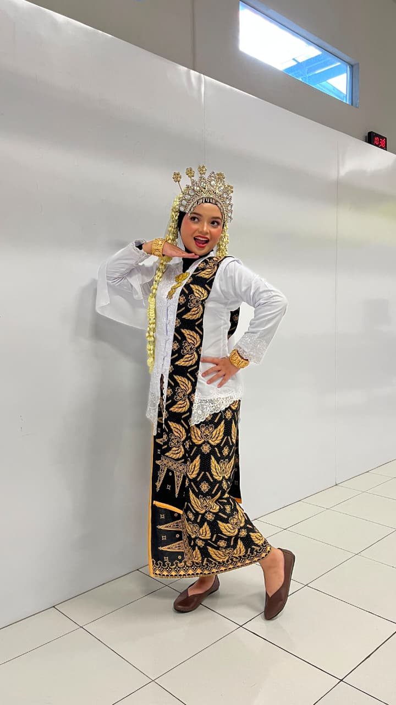
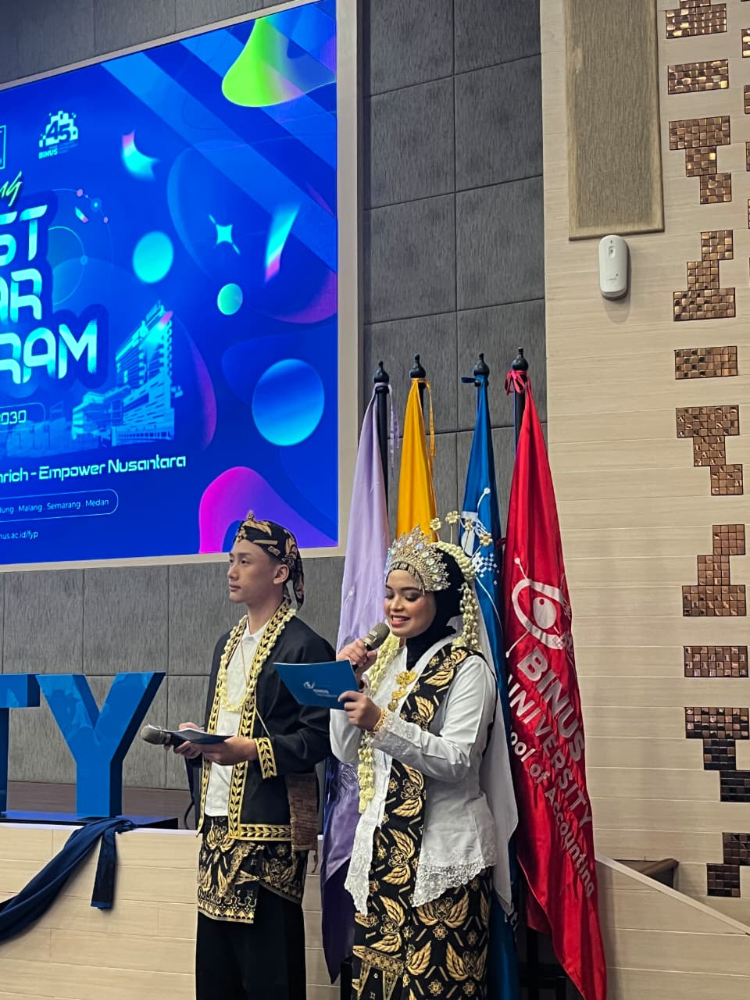
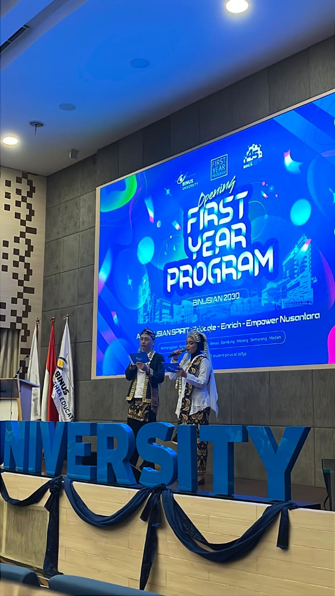

AUG 2026
MASTER OF CEREMONY
Opening FYP — Binusian 2030



On August 4th, 2026, I had the opportunity to serve as the MC for the FYP (First Year Program) opening ceremony for the Binusian 2030 class. The opening ceremony was held at all BINUS campus locations, from BINUS Medan to BINUS Malang. It was a wonderful experience to be able to contribute to this year's FYP.
Watch livestream ↗